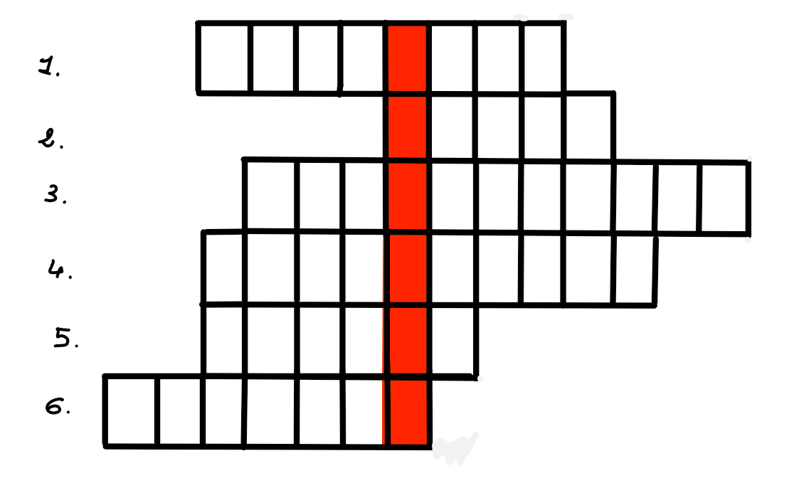

Questa è una pagina magica... dove ti porterà?
Iniziamo con qualcosa di facile, che ne dici?
|
\[ 0.1\overline{3} - \left[ \frac{1}{3} - \left( 0.2 - \frac{1}{5} \right) \right] - \left[ -\frac{1}{10} - \left( -2.1 \right) \cdot (-1) \right] + 23 \] |
||
| Qual è il risultato corretto? | 52 34 25 12 |
|  |
| 1.Lo dici quando elimini i numeri dalle espressioni (verbo all'infinito) |
2.Come chiamiamo le regole per risolvere le espressioni? |
3.Qual è il risultato dell'espressione di prima (scritto in lettere)? |
| 4.Come si chiama il figlio di Andromaca ed Ettore? |
5.La best-profa del Santorre |
6.Cosa ti dico quando arriviamo al fondo di un calcolo con le frazioni: 'si può ...'? |
| Qual è la parola sottolineata? |
|
X
I
II
I0I
I*II
III0I
I0I0II
II0II*I
I*II0I0I
I0III0I0I
II*I0I*III
II0I0I0II0I
I0I0*0I0IIII
I0*0I0I0I0*0I
I0I*I0III0II0I*I
I0*II0II0I*I0II0I0I
III
Tutto questo pensare per guadagnarti i nostri
AUGURI